Opening the project takes you to the welcome page as shown below. It is used as the welcome page due to the use of index.html as the title. This is stored in templates.
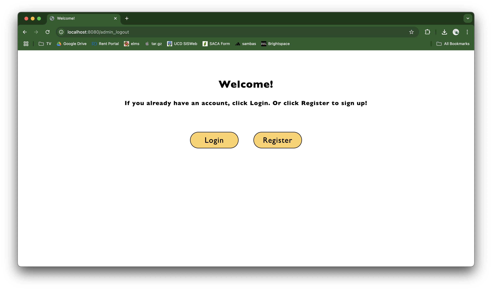
From here, you can click "Login" if you already have an account, or "Register" to make one. Clicking "Back" brings you back to the welcome page. Changing the radiobutton selection from Customer to Admin changes the title of the page, which page is shown next, and how the information is stored/retrieved.
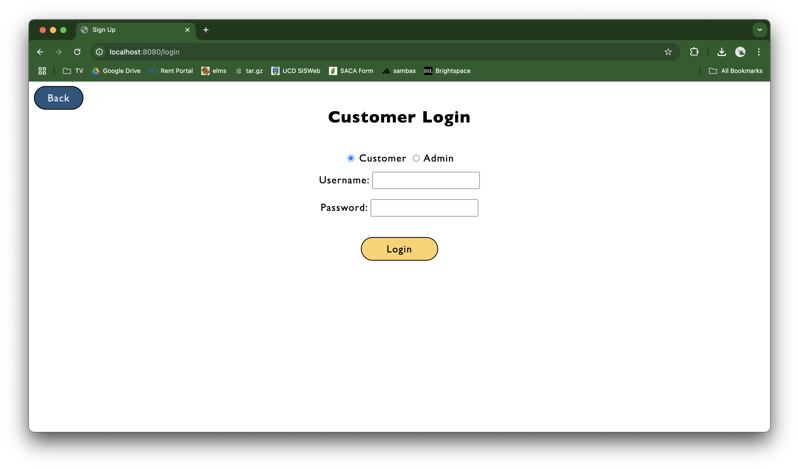
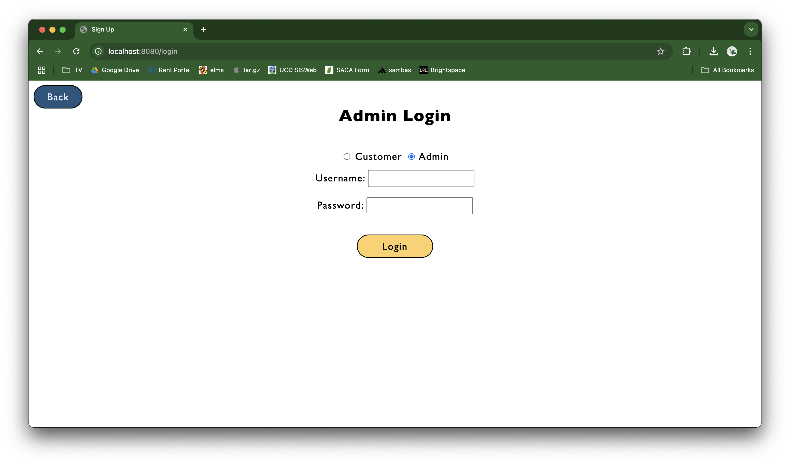
For the sake of this report, we are registering both a new Customer and new Admin with the username and password "test".
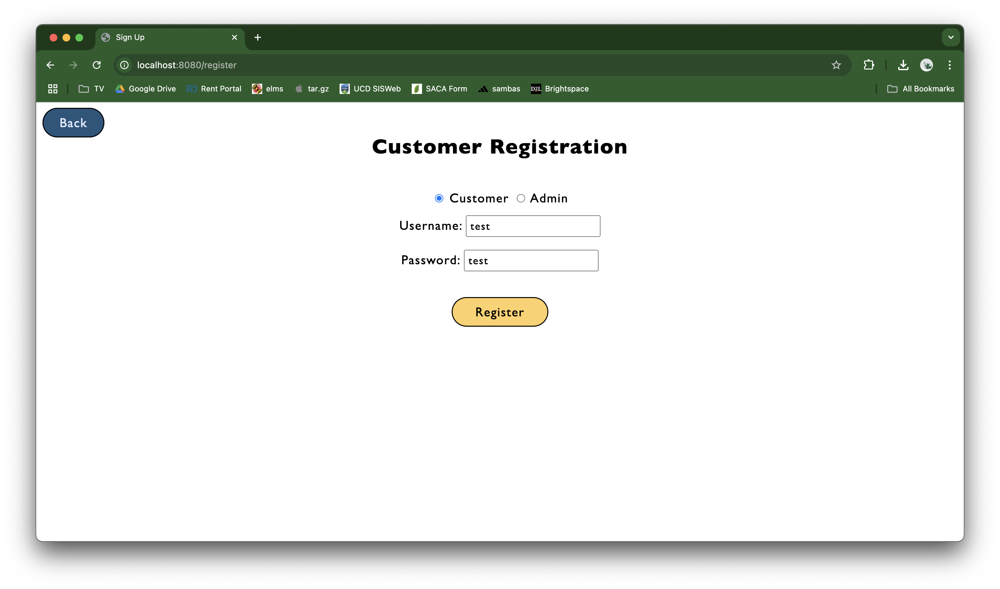
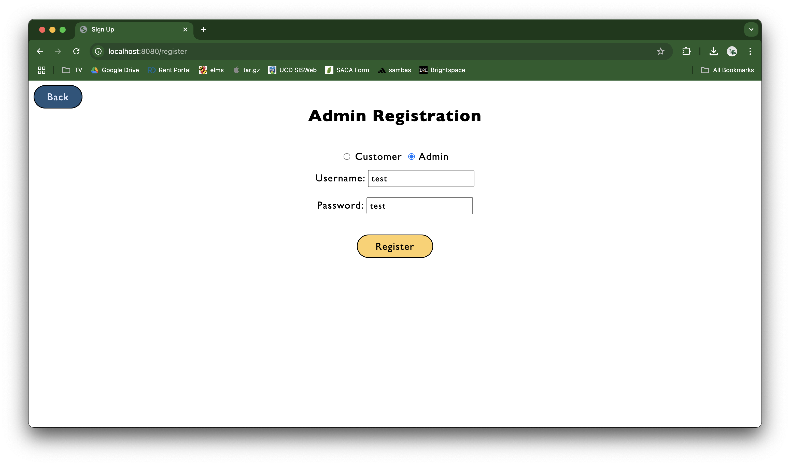
Registering either Customer or Admin takes you to the same page as logging in with an existing account. But, first we will look at the functionality of the Admin account. The image below shows the home view of the admin with 10 products already put into the store for the sake of demonstration.
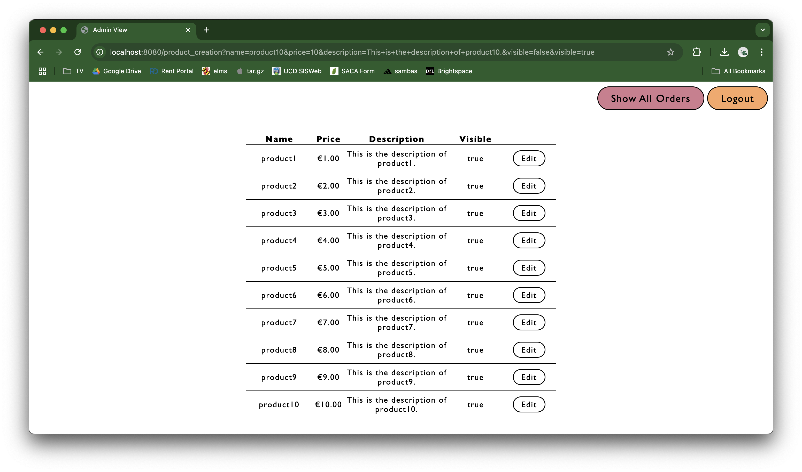
Scrolling to the bottom of the product list brings you to a form that allows for new products to be added.
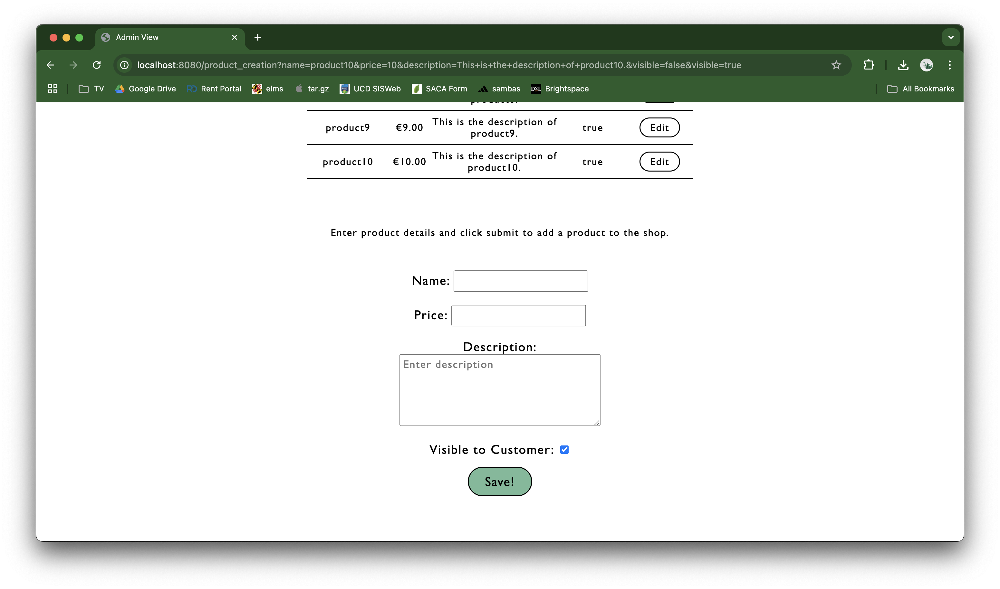
Entering the required imformation and clicking save will add the new product to the list above and store it in the database.
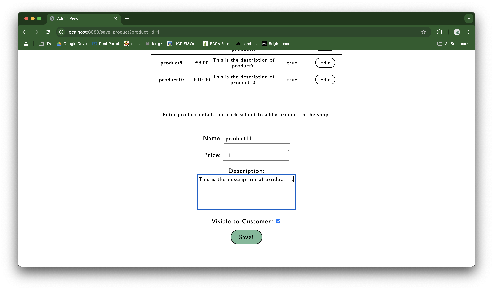
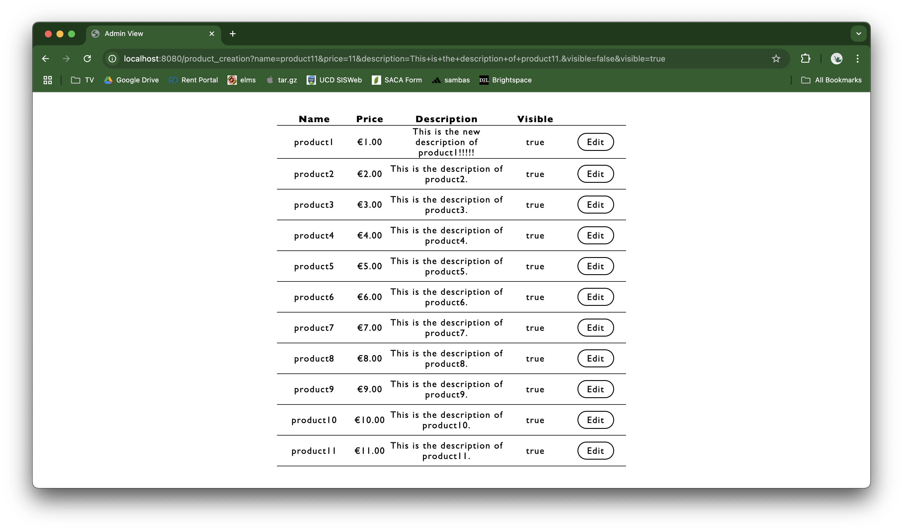
Once a product is added to the list, it can be edited. Clicking the edit button next to the product in question brings you to a page where you can edit the price, description, and visibility of the product, then save it.
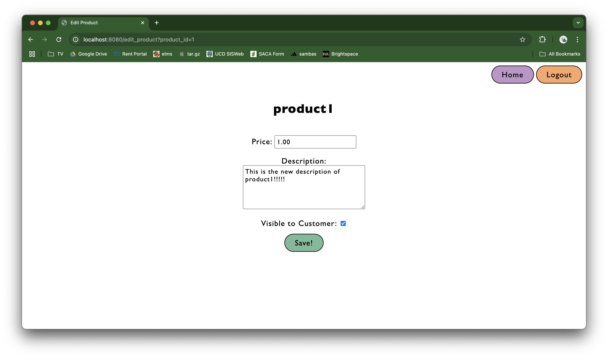
Once you change information about a product and click save, you will be taken back to the Admin home page where the changes can be seen in the product list.
From here, we click the "Logout" button in the top right corner to bring us back to the welcome page and register a new Customer to make an order. Registering a new Customer brings you to the Customer home page. On this homepage, we can see both the changes made earlier to "product1" and the addition of "product11".
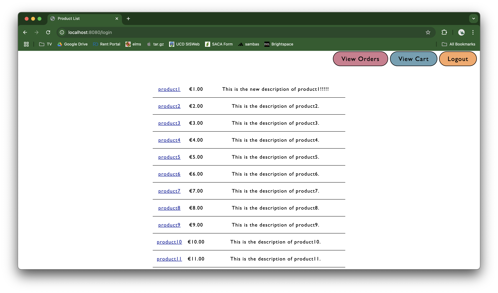
Clicking on the name of a product will take you to a product details page.
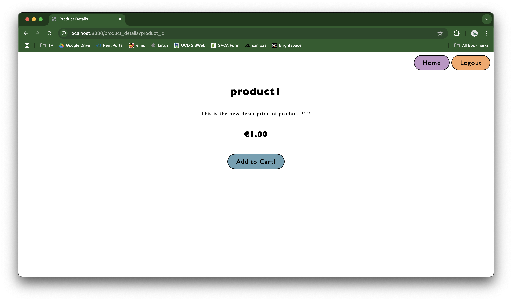
From here, you can add the product to your cart. Doing so will take you back to the Customer home page to continue shopping. To view what is in the cart, click the "View Cart" button in the top right.
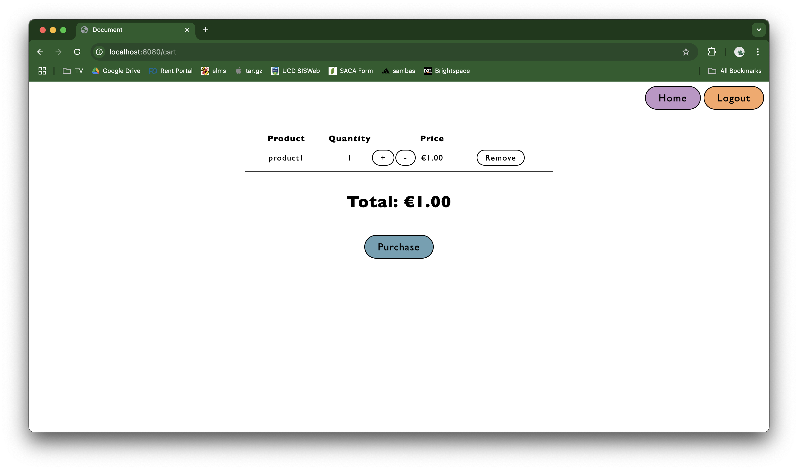
In the cart, you can increase or decrease the quantity of a product that you have via the "+" and "-" buttons. If you decrease the quantity to 0, the product is automatically removed from the cart. Clicking "Remove" also does this. Clicking "Home" will take you back to the Customer home page where more products can be added to the cart.
Clicking the purchase button brings you to an order summary screen. From here, clicking "Home" takes you back to the Customer home page and creates a new Order so you can keep shopping. Clicking "Logout" will log you out.
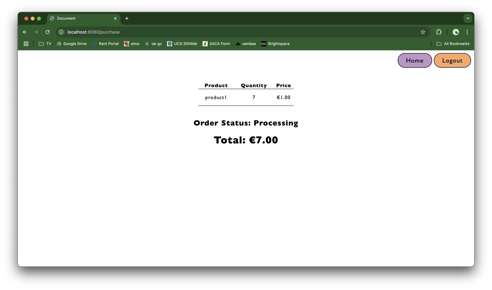
After making a couple purchases and clicking "Home", clicking "View Orders" will pull up a list of orders made by the current user.
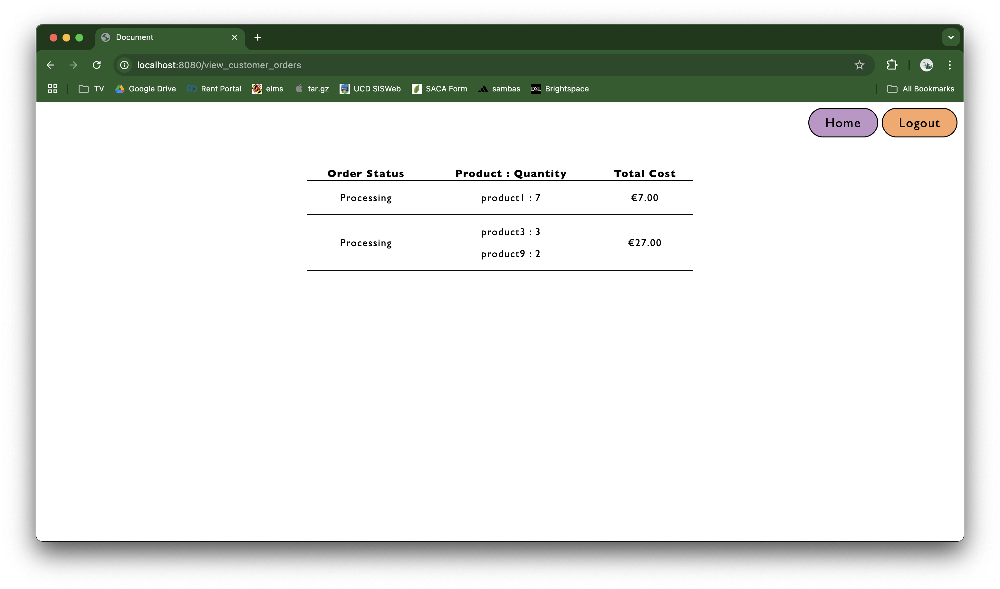
After clicking "Logout" and logging back in with our already registered Admin, we can view all the orders made by any customer. You can tell which orders were made by each customer via their Customer IDs.
Clicking "Edit" next to an order takes you to a screen where you can update the status of the order. Then, clicking save will take you back to the view orders page with the update response being shown.
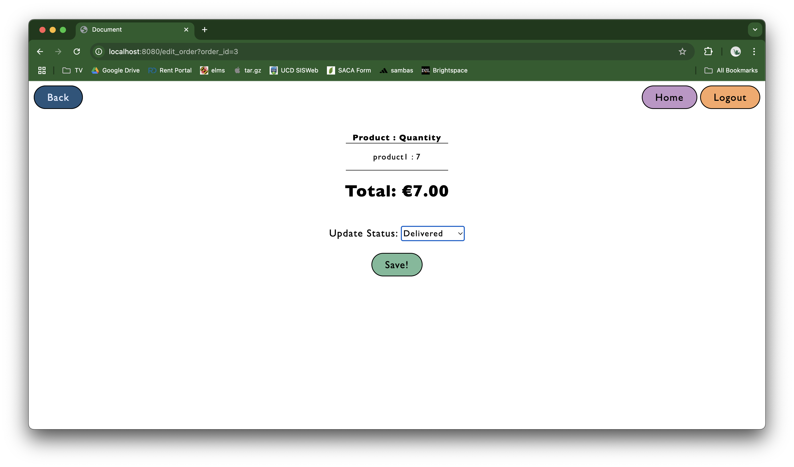
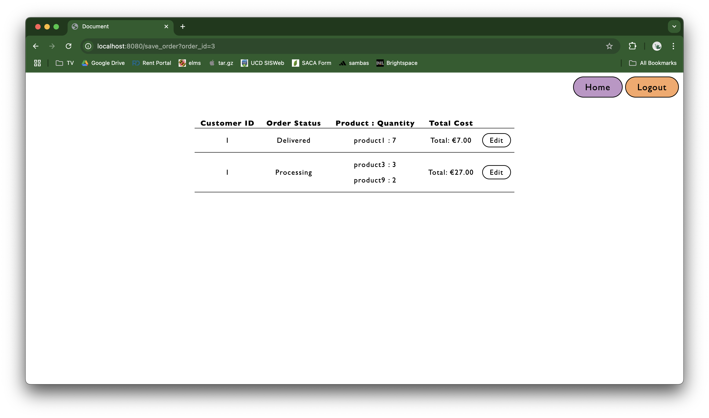
This is all the functionality of the website. The implementation of these features can be viewed within this project's src folder. The code itself is split into folders defining the type of actions within, with extensive comments explaining the implementations.